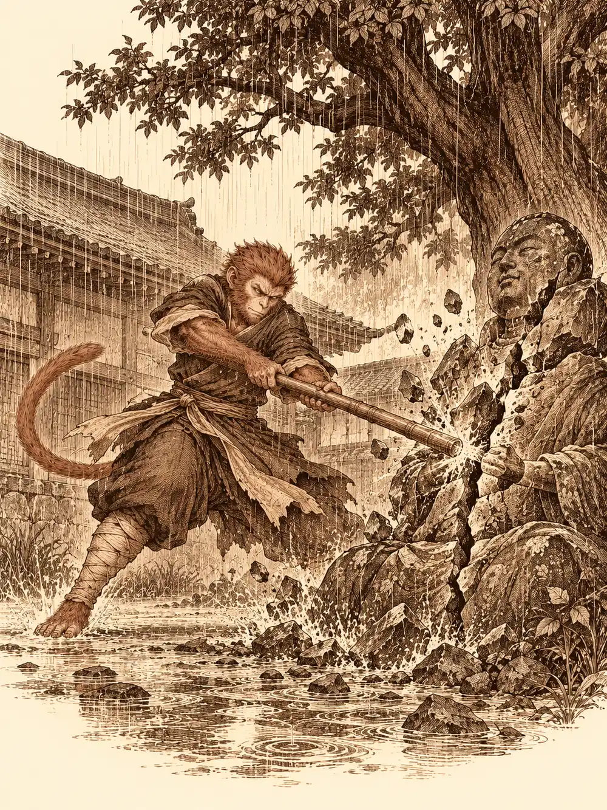

Capítulo 3
No podemos descansar
Libro I · Los cazadores de Ukio
Los tres forasteros entraron en Ukio a media tarde, con el polvo del camino en las botas y la intención de encontrar trabajo antes que cama. Eran cazadores de yokai, como tantos otros que empezaban a dejarse caer por la comarca, y venían de muy lejos. Uno de ellos tenía alas. Se llamaba Hayate y caminaba con un arco a la espalda y la seguridad de quien sabe que, si las cosas se tuercen, siempre le queda el cielo. Otro era Akira, de voz tranquila y manos que olían levemente a ceniza. El tercero era un erudito de modales exquisitos que hablaba de los yokai con el entusiasmo con que otros hablan de mujeres o de vino, y que nunca soltaba del todo el libro que llevaba bajo el brazo.
Siguieron el cartel de la taberna. Al abrir la puerta, lo primero que vieron fue un mono despatarrado sobre una mesa, borracho a medias, con una geisha a cada lado y una carcajada a punto de escapársele por la nariz.
El tabernero, Kitaro, les sirvió sake en copitas pequeñas, porque vino no tenía, y los miró de arriba abajo con ojo de comerciante.
"Os parecéis a los otros que han pasado por aquí", dijo. "Cazadores. Aquel de allí lleva más de dos semanas en mi casa. Él y sus compañeros se han cargado ya unos cuantos yokai, pero los demás andan con sus recados y lo han dejado solo". Señaló al mono con la barbilla. "Si buscáis contratos, os ayudará. Dicen que pelea bien".
Sun Gukon tardó un rato en levantarse. Lo hizo arrastrando la silla con toda la pereza del mundo, le pidió a las chicas que no se alejaran mucho y se acercó a la mesa de los recién llegados con una botella de sake que no había pagado. Se sentó, puso los pies encima de la mesa y se reclinó hacia atrás.
"Muchas gracias por la invitación, señores. Sois nuevos por aquí, ¿no?".
El erudito le explicó con mucha educación que no hacía falta matar a los yokai para divertirse con ellos, que lo verdaderamente interesante era conocerlos, porque eran un orden de criatura distinto a cualquier otro. Sun le contestó que la diversión de verdad venía después de cazarlos, cuando se celebraba. Se cayeron bien, aunque al erudito le pareció poco educado lo de los pies. Una mano que nadie veía agarró la silla del monje por detrás y tiró de ella. Sun dio una voltereta en el aire y cayó de pie, ágil y ofendido, en mitad de la taberna.
En la mesa de al lado, dos aldeanos llevaban un rato cuchicheando y mirándolos de reojo. Uno de los cazadores se acercó a reprochárselo con paso firme y los hombres se encogieron, se disculparon con una reverencia y le confesaron el motivo: habían reconocido al mono. Era uno de los que habían limpiado la casa de los Baki la semana anterior. Necesitaban ayuda.
Dos sillas se deslizaron solas por el suelo hasta colocarse detrás de ellos. Los aldeanos se sentaron muy despacio, intimidados, sin apartar la vista de aquella magia que nadie movía.
"Tenemos un yokai en casa", dijeron. "Viene cada noche".
Era un gato, explicaron, o algo con forma de gato y más de una cola. Aparecía en el patio trasero, donde enterraban a sus muertos, y los levantaba. Los cadáveres de sus propios abuelos arañaban las ventanas, intentaban entrar, y nadie en la casa había dormido una noche entera desde hacía tiempo.
Sun se rascó la cabeza. Los nekomata, que él supiera, eran más bromistas que otra cosa. A los aldeanos aquello no les parecía ninguna broma.
Uno de los cazadores recordó algo que había leído: que ciertos gatos, cuando llegan a viejos, desarrollan una segunda cola y poderes que ningún animal debería tener, y que los que han sido maltratados en vida pueden volver buscando venganza. Los dos hermanos se miraron. Sus abuelos habían tenido un gato, sí. Habían muerto hacía unos años.
Aceptaron el encargo sin hablar de dinero. Alguno habría preferido dejar claras las cuentas antes de moverse de la silla, pero el erudito insistió en que un problema dentro de la propia casa era lo más importante que podía tener un hombre, y que las recompensas se discutirían después. Los aldeanos les dieron un plano de la vivienda y les advirtieron de que las apariciones solían empezar hacia medianoche. Antes de salir, Sun pasó por la herrería a reponer dardos. El herrero le contó, contento, que desde que los cazadores andaban por Ukio el pueblo era más próspero.
La casa de los hermanos era sencilla, de pescadores, con un patio trasero donde un árbol viejo daba sombra a una estatua de piedra. Representaba a Meilink, les explicó la familia: diosa de la sabiduría y del reposo, protectora de los muertos. A sus pies, bajo la tierra, estaban enterrados los antepasados de la casa. Allí rezaban y allí quemaban incienso.
Hayate encontró huellas de gato recientes que pasaban entre las sepulturas y unos arañazos en la parte trasera de la estatua. El rastro subía por la piedra y se perdía.
La tierra de tres de las tumbas estaba removida, como si algo hubiera salido de ellas hacía poco y hubiera vuelto a entrar. Los cazadores se pusieron manos a la obra. Hayate ató una cuerda a una rama del árbol y preparó una trampa sobre una de las sepulturas. Entre varios arrastraron una piedra pesada hasta otra. La tercera quedó como estaba.
Decidieron que el mono haría guardia fuera mientras los demás cenaban con la familia. Empezó a llover. Sun se sentó bajo el árbol con el bastón sobre el hombro, el pelo empapado y cara de pocos amigos, y al cabo de un rato uno de los hermanos salió a llevarle comida y sake. Dentro, mientras tanto, la familia tapiaba las ventanas con tablones, como hacía cada noche.
En la pared del comedor colgaba un retrato. Un anciano de gesto severo, con una katana a la cintura y un gato negro a sus pies. Era el abuelo, les contaron. Había sido general en los ejércitos antiguos, un hombre estricto que castigaba a todos los de la casa. Una hermana trabajaba ahora para los Baki; los demás vivían de la pesca. Más tarde, en voz baja y lejos de los otros, uno de los nietos admitió que sí, que era probable que también castigara al gato.
Cerca de la medianoche se oyó un maullido.

Un gato pequeño, de pelaje oscuro, saltó sobre la cabeza de la estatua y se sentó allí a lamerse una pata, tranquilo como cualquier gato en cualquier tejado. Solo Hayate se fijó en lo que los demás no veían: detrás de él ondeaban dos colas.
El arquero le habló con palabras de animal, y el gato lo miró con incredulidad, casi con desprecio, antes de contestarle en silvano, en un silvano perfecto.
"¿Quiénes sois?".
Hayate le explicó que unos aldeanos les habían pedido ayuda y que habían venido a investigar sin decidir aún qué hacer.
"Yo digamos que me estoy vengando", respondió el gato.
Sun le exigió que se marchara de allí. El nekomata se echó a reír con una risa de maullido, y sus ojos se encendieron de un violeta intenso. De la primera tumba brotó una mano, y después un brazo, y después un cuerpo entero cubierto de tierra. En la tumba de la piedra, otra mano asomó entre la roca y la tierra sin poder salir del todo. El tercer muerto se levantó justo donde esperaba la trampa: la cuerda se tensó, lo lanzó contra el árbol y allí se quedó, atado, retorciéndose.
"Os voy a matar", anunció el gato, con su voz curiosa de gato simpático.
Hayate alzó el vuelo y disparó desde el aire; la flecha se clavó en la cabeza de un zombi. Akira apoyó la mano en el hombro de Sun y le prestó algo de su fuego. El monje sintió un calor que le subía por el pecho y le llenaba la boca, y unas escamas rojizas le brotaron en la frente. Abrió las fauces y, como lo habría hecho un dragón, escupió una llamarada sobre el muerto atrapado bajo la piedra. Akira, por su parte, lanzaba contra los zombis una magia que chisporroteaba en la lluvia.
Uno de los muertos alcanzó al erudito y le arañó el costado. La respuesta fue inmediata: fuego, a quemarropa, y el zombi se deshizo. Al registrar los restos, el erudito encontró una katana y jirones de un uniforme antiguo. Tenía el rostro del retrato.
"¿Con esto termina el problema?", le preguntó al gato.
"El problema era el abuelo", contestó el nekomata, "pero su familia lo pagará".
A partir de ese momento el gato dejó de estar en ningún sitio. Se fundía con las sombras del patio, aparecía, golpeaba, volvía a desaparecer. Hirió a Akira, que respondió con su magia y acabó con el muerto atrapado bajo la piedra. El erudito adoptó una forma terrible, de hueso y pavor, para intentar localizarlo. Hayate lo marcó desde arriba y le disparó entre las sombras. Sun le lanzó golpe tras golpe con la intención de derribarlo y no consiguió tumbarlo una sola vez.
Entonces las dos colas se le enroscaron al monje. Sun se quedó rígido, paralizado, incapaz de mover un dedo mientras las garras le abrían la piel. Cuando por fin recuperó el control de su cuerpo, el erudito ya estaba a su lado con una poción. Al otro lado del patio, el zombi atado había logrado librarse de la cuerda y avanzaba de nuevo hacia ellos.
El gato se escondió detrás de la estatua. Desde allí seguía atacando, protegido por la piedra de la diosa.
Sun lo vio. Algo se le encendió por dentro que no tenía nada que ver con el aliento de Akira. Echó a correr hacia la estatua y la golpeó con todo lo que tenía, una vez, otra, hasta que la piedra se partió por la mitad. La parte de arriba se inclinó hacia atrás y se desplomó con un estruendo. El gato intentó apartarse. No lo consiguió del todo.
Se oyó un maullido agudo. El nekomata quedó atrapado por las dos colas bajo el peso de Meilink.
Malherido, inmóvil, el gato dejó de bufar. Se quedó quieto mirando al erudito y empezó a lamerse las heridas.
"¿Qué me ofrecéis a cambio de que deje de molestarlos?".
El erudito se arrodilló delante de él. No tenía sentido seguir castigando a unos nietos por lo que había hecho su abuelo, le dijo. Pero había otra salida. En la universidad de la que venía había personas que respetaban a los yokai más de lo que nadie en aquel pueblo podría imaginar. Allí lo tratarían bien. Tendría comida. Sería, con toda probabilidad, el sujeto más interesante de todo el edificio. Mientras hablaba, la forma de hueso se le deshizo y recuperó su rostro.
El nekomata lo pensó.
"Trato", dijo al fin. "Pero que no se me acerque ese mono".
Sun refunfuñó, miró al gato de reojo y levantó la estatua lo justo para liberarle las colas. El yokai salió de debajo de un salto y fue a parar a los brazos del erudito, donde se acurrucó y empezó a frotar la cabeza contra su pecho para que lo acariciara. Las dos colas se movían despacio, satisfechas. Al otro lado del patio, el último zombi se detuvo, dio media vuelta y regresó a su tumba, y la tierra se cerró sobre él. Le dieron una poción al gato, que se la bebió entera y se quedó dormido.
"En la universidad hay mucho pescado", le susurró el erudito.
Uno de los hermanos salió al patio en cuanto cesó el ruido y se quedó parado al ver a un cazador con el gato en brazos y a la diosa de su familia partida en dos.
Le explicaron que el yokai se marchaba con ellos y que no volvería a molestarlos. El erudito, además, le dio su palabra de que su compañero Sun Gukon vendría a ayudarle a colocar una estatua nueva; lo de la diosa había sido un accidente en mitad de la lucha. Que lo buscaran en la taberna en unos días. Sun, a su lado, no dijo ni que sí ni que no.
El otro hermano les tendió una bolsa de cuero con cien monedas de oro, todo lo que tenían. El erudito la sostuvo flotando delante de él, la abrió con las dos manos, contó, y devolvió una parte. Veinte monedas para cada cazador. Con eso era suficiente.
Los hermanos se despidieron con reverencias que no terminaban nunca. Los cuatro volvieron a la taberna bajo la lluvia, con los dardos de Sun gastados, el costado del erudito arañado y un gato de dos colas dormido entre sus brazos.